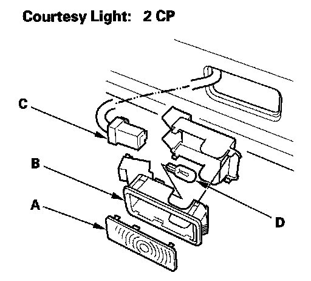

Courtesy Light Replacement
Courtesy Light Replacement
1. Carefully pry off the lens (A) with a small screwdriver.
2. Pry out the housing (B) from the door, then disconnect the 2P connector (C).
3. Remove the bulb (D) from the socket.
4. Install in the reverse order of removal.